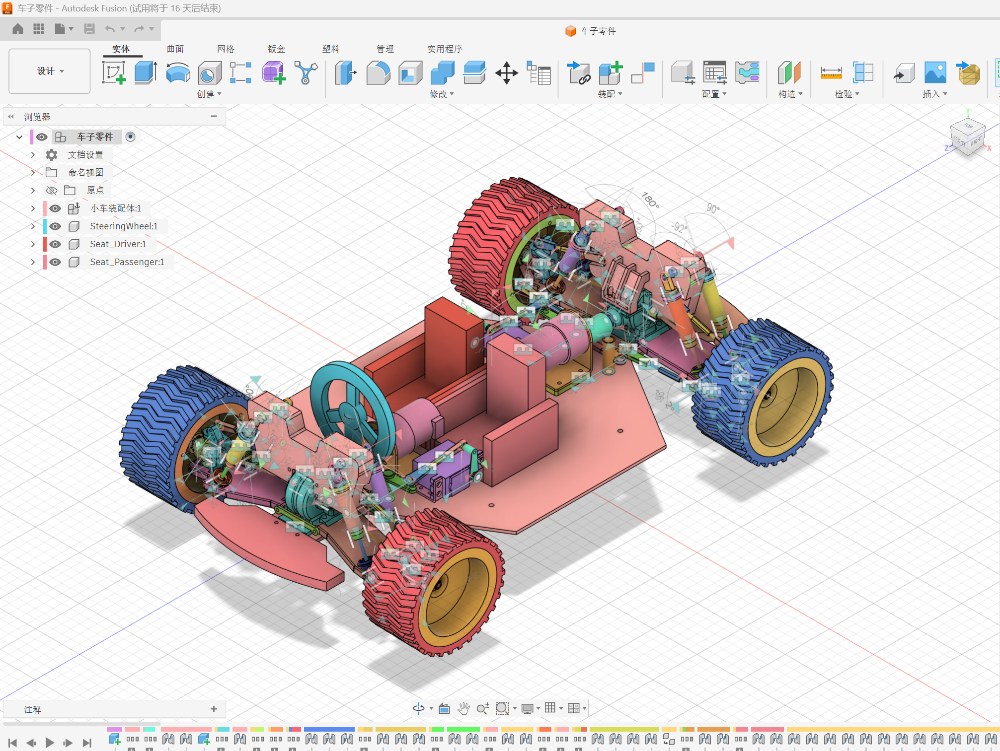
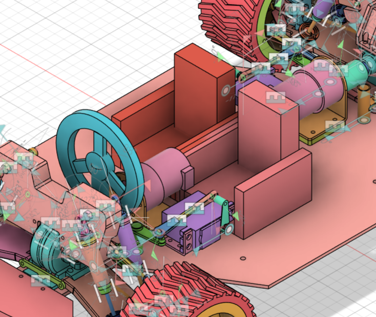

Exercise 3: SophiCar & Fusion 360 Car Parts Design
Step 1: Export F3D Model from SophiCar Website
Register and log in to the SophiCar website, then export the F3D car model.

Step 2: Open Car Model in Fusion 360
In Fusion 360, open the exported car model file.

Step 3: Create Custom Parts with Autodesk Assistant
Use Autodesk Assistant AI to help create two types of parts: a steering wheel and a car seat. Write specific prompts with detailed positions and dimensions for easy modification later.
Modifications made:
- Shortened seat length
- Reduced armrest thickness


GIF Animation Demo
The following GIF shows the complete process of creating and modifying the car parts:

Summary
This exercise demonstrates how to use modern CAD tools and AI assistants to design custom car parts. Key learnings include:
- Exporting 3D models from online platforms (SophiCar)
- Working with F3D files in Fusion 360
- Using Autodesk Assistant AI for parametric design
- Writing effective prompts with specific dimensions and positions
- Iterative design modifications (seat length, armrest thickness)